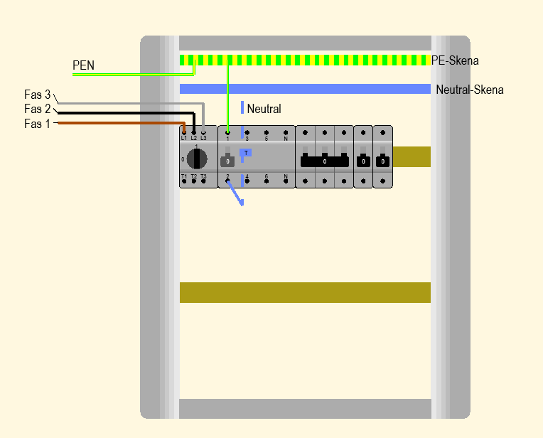

Avsnitt 5a
Symmetriska trefastlaster
En symmetrisk last belastar alla tre faser lika mycket — neutralledaren bär ingen ström.
Vad är en symmetrisk trefaslast?
En symmetrisk trefaslast belastar de tre olika faserna lika mycket, dvs impedansen i alla tre faserna och därmed är även strömmen lika stor.
- Returströmmar som kommer från lasterna till neutralskenan är då lika stora för varje fas och kommer att balansera varandra i nollpunkten.
- Det innebär att summaströmmen och spänningen blir noll i neutralpunkten (anläggningens nollpunkt).
- Resulterande potential = Noll volt — multimetern visar 0 V.
🔁 Fasströmmar
IL1 = IL2 = IL3
Alla lika stora → summan = 0
⚖️ Nollpunktsström
IN = IL1 + IL2 + IL3 = 0 A
Ingen ström i neutralledaren
📊 Vektordiagram
De tre vektorerna är exakt 120° förskjutna och tar ut varandra — resultanten är noll.
Fasördiagram – symmetrisk vs osymmetrisk last
Trefaskrets – symmetrisk last
Avsnitt 5b
Osymmetriska trefastlaster
En osymmetrisk last belastar faserna olika — en ström uppstår i neutralledaren.
Vad händer vid osymmetrisk last?
Detta är inte fallet vid en osymmetrisk trefaslast. I detta fallet är belastningen i de tre olika faserna olika stor — dvs impedansen i faserna är olika.
- Det innebär att strömmen i faserna inte balanserar varandra → nollpunktsström ≠ 0.
- Strömmen i faserna (nollpunkt) inte balanserar och därmed kommer anläggningens spänningen mot neutralpunkten.
- Det blir en potentialskillnad mellan transformatorns neutralpunkt och anläggningens neutralpunkt.
- Resulterande potential = > 0 V — multimetern visar mer än noll volt.
⚡ Fasströmmar
IL1 ≠ IL2 ≠ IL3
Olika stora → summan ≠ 0
⚖️ Nollpunktsström
IN = IL1 + IL2 + IL3 ≠ 0 A
Ström flödar i neutralledaren
📊 Vektordiagram
Vektorerna tar inte ut varandra — resultanten är större än noll.
Trefaskrets – osymmetrisk last
Avsnitt 5c
Neutralledaren
Neutralledaren kopplar ihop anläggningens neutralpunkt med transformatorns — och löser problemet med osymmetri.
Varför behövs neutralledaren?
Man löser problemet med osymmetrisk belastning genom att dra en neutralledare mellan anläggningens neutralpunkt och transformatorns neutralpunkt.
- I de fall man har en osymmetrisk belastning kommer det att gå en ström i neutralledaren till transformatorns neutralpunkt.
- Neutralledaren "städar upp" obalansen — spänningen mot noll hålls stabil för alla faser.
- Utan neutralledare (t.ex. i D-koppling) måste lasten vara symmetrisk — annars uppstår spänningsobalans.
Y-koppling
Har neutralpunkt — neutralledaren kan anslutas. Möjliggör både 230 V (fas–noll) och 400 V (fas–fas).
D-koppling
Har ingen neutralpunkt — ingen neutralledare. Används vid symmetrisk last där IN = 0.
Transformator 10/04
Primär D-koppling (10 kV), sekundär Y-koppling (400 V) — ger neutralpunkt på lågspänningssidan.
⚠️ Vad händer om neutralen bryts?
Om neutralledaren bryts försvinner den stabila återledaren. Strömmen tvingas gå i serie mellan apparater på olika faser — istället för var och en mot noll.
Varje apparat får 230 V (fas–noll)
L1 → Apparat → N
Stabilt och säkert
Apparaterna på L1 och L2 kopplas i serie mot varandra
Spänning upp till 400 V (fas–fas) fördelas
Spänningsdelning efter impedans: Den apparat med högst impedans (t.ex. en glödlampa) tar den största andelen av 400 V. Det kan leda till att lampor och elektronik exploderar eller fattar eld.
Innan: L1 = 10 A, L2 = 8 A, L3 = 7 A → IN = 1 A går i neutralen
Efter neutralbrott: strömmen tvingas via fas–fas (t.ex. L1–L2 = 400 V) → spänningsdelning → överspänning
Neutralledarens funktion
PEN-ledaren delas i elcentralen
I TN-C-S-system kombineras skyddsjord och nolla till en PEN-ledare fram till elcentralen. Där delas den obligatoriskt upp i separata PE- och N-skenor.

Avsnitt 5d
Generatorn & Sinusformad spänning
Växelström skapas av generatorer som snurrar i ett magnetfält. Resultatet är en sinusformad spänning med en frekvens av 50 Hz i Sverige.
🔩 Stator
Den stationära delen av generatorn — innehåller lindningarna för de tre faserna (L1, L2, L3). Magnettfältet inducerar spänning i lindningarna.
🔄 Rotator (Rotor)
Den roterande delen — en elektromagnet driven av t.ex. en ångturbin, vattenturbin eller dieselmotor. Snurrar inuti statorn och inducerar växelspänning.
⚡ En fas i taget
Rotorn passerar varje lindning en åt gången, 120° isär. Det skapar tre sinusvågor som är 120° förskjutna — ett trefassystem.
Frekvens & Period
Spänningsvärden – vad betyder 230 V?
Sinusvågan varierar hela tiden — 230 V är det effektiva värdet (RMS), inte toppvärdet.